27 videos, 14 minutes in all. Each page has the full script with its times, the sound (voice, music, effects, the soundtrack to play) and the subtitles (.srt / .vtt).
C:\Users\ayoub\OneDrive\Desktop\pointili\social\ads\out — the 15 ads (and out\whatsapp: lighter copies of f4 and f14), plus apk-install.mp4C:\Users\ayoub\OneDrive\Desktop\pointili\social\explainers — the explainers sent to ownersC:\Users\ayoub\OneDrive\Desktop\pointili\social\install-guide — the two «add to home screen» guidesC:\Users\ayoub\OneDrive\Desktop\pointili\v2\public\clips — the clips the site showsC:\Users\ayoub\OneDrive\Desktop\pointili\social\videos — these pages; subs\ the subtitles, sound\ each soundtrack aloneVertical ads for Instagram, Facebook and TikTok, with a Derja voice, music and subtitles.
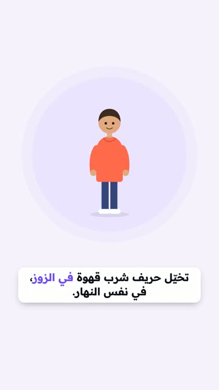
C:\Users\ayoub\OneDrive\Desktop\pointili\social\ads\out\f1-zouz-qhawi.mp4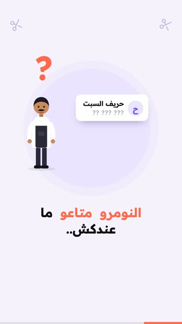
C:\Users\ayoub\OneDrive\Desktop\pointili\social\ads\out\f2-hajjam.mp4C:\Users\ayoub\OneDrive\Desktop\pointili\social\ads\out\f3-reply.mp4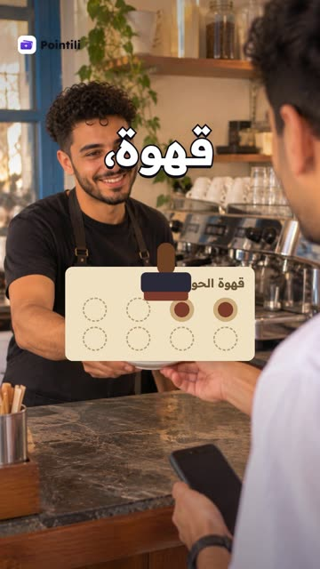
C:\Users\ayoub\OneDrive\Desktop\pointili\social\ads\out\f4-fikra.mp4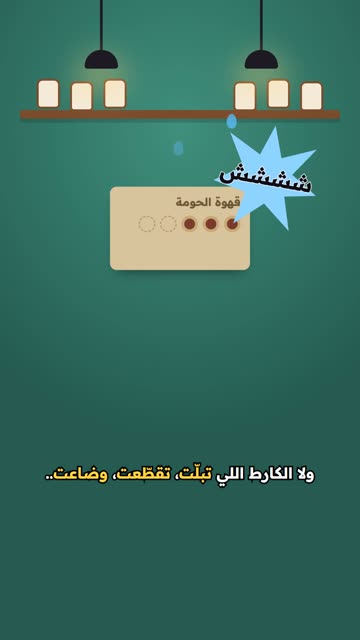
C:\Users\ayoub\OneDrive\Desktop\pointili\social\ads\out\f5-kartouna.mp4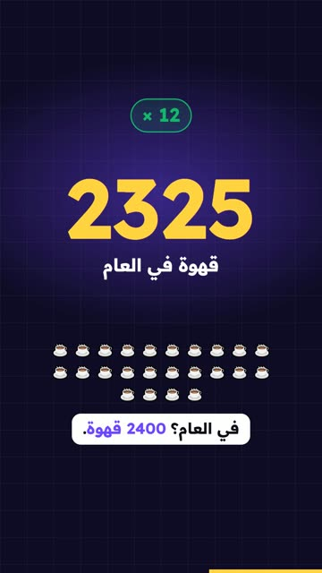
C:\Users\ayoub\OneDrive\Desktop\pointili\social\ads\out\f6-hsab.mp4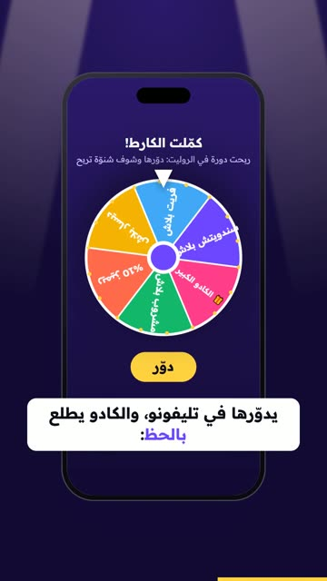
C:\Users\ayoub\OneDrive\Desktop\pointili\social\ads\out\f7-roulette.mp4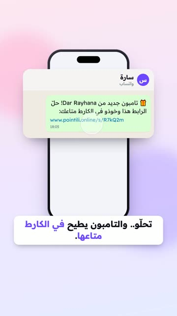
C:\Users\ayoub\OneDrive\Desktop\pointili\social\ads\out\f8-online.mp4C:\Users\ayoub\OneDrive\Desktop\pointili\social\ads\out\f9-kod.mp4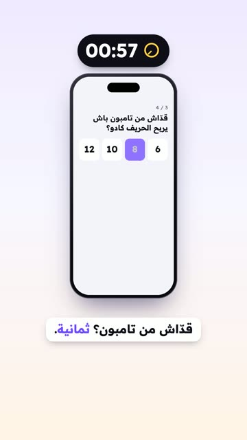
C:\Users\ayoub\OneDrive\Desktop\pointili\social\ads\out\f10-dqiqtin.mp4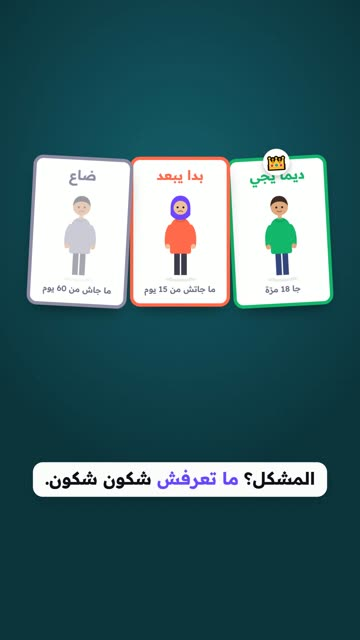
C:\Users\ayoub\OneDrive\Desktop\pointili\social\ads\out\f11-thletha.mp4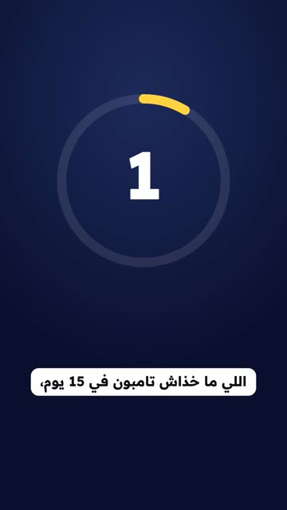
C:\Users\ayoub\OneDrive\Desktop\pointili\social\ads\out\f12-3addad.mp4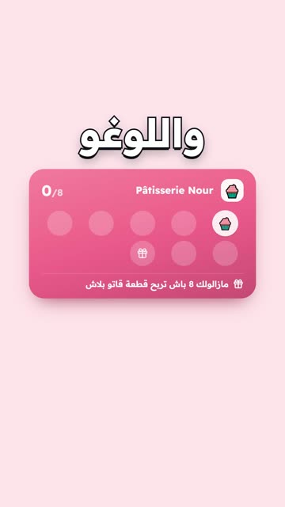
C:\Users\ayoub\OneDrive\Desktop\pointili\social\ads\out\f13-logo.mp4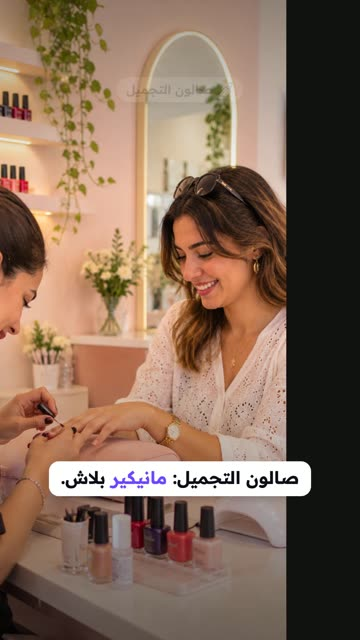
C:\Users\ayoub\OneDrive\Desktop\pointili\social\ads\out\f14-kol-mahal.mp4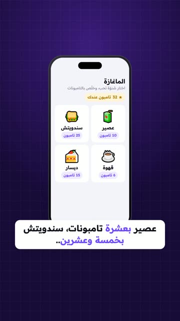
C:\Users\ayoub\OneDrive\Desktop\pointili\social\ads\out\f15-maghaza.mp4Short how-tos to send on WhatsApp: no voice, the words on screen say it.
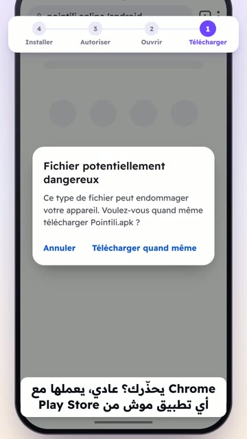
C:\Users\ayoub\OneDrive\Desktop\pointili\social\ads\out\apk-install.mp4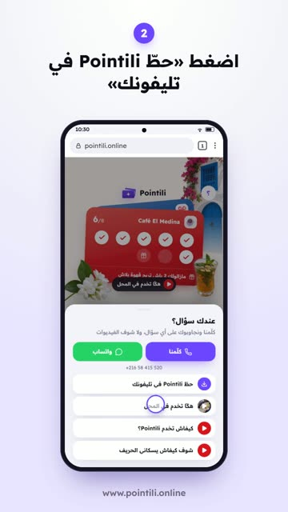
C:\Users\ayoub\OneDrive\Desktop\pointili\social\explainers\install-android-app.mp4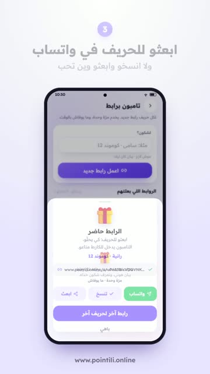
C:\Users\ayoub\OneDrive\Desktop\pointili\social\explainers\tampon-by-link.mp4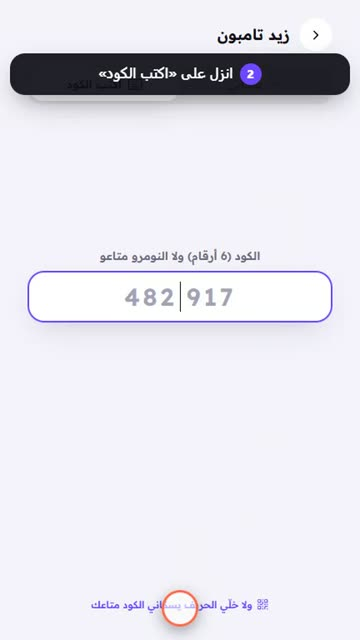
C:\Users\ayoub\OneDrive\Desktop\pointili\social\explainers\tampon-by-phone.mp4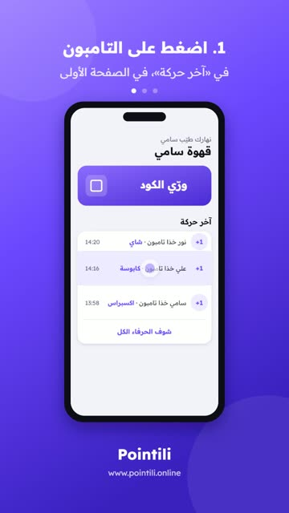
C:\Users\ayoub\OneDrive\Desktop\pointili\social\explainers\fix-tampon.mp4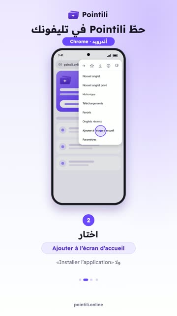
C:\Users\ayoub\OneDrive\Desktop\pointili\social\install-guide\install-android.mp4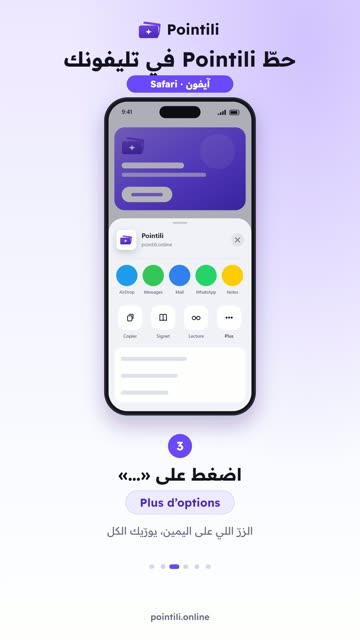
C:\Users\ayoub\OneDrive\Desktop\pointili\social\install-guide\install-iphone.mp4Short silent clips the site shows owners (how it works, the wheel).
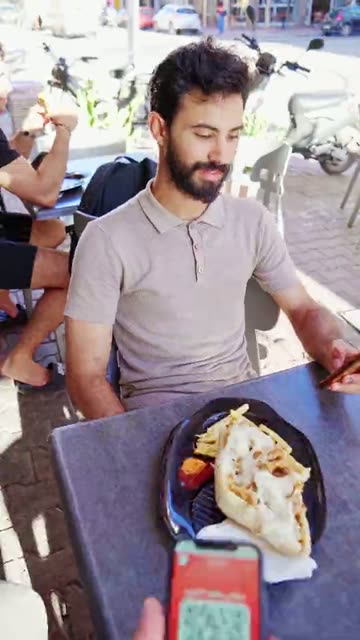
C:\Users\ayoub\OneDrive\Desktop\pointili\v2\public\clips\how-1-v2.mp4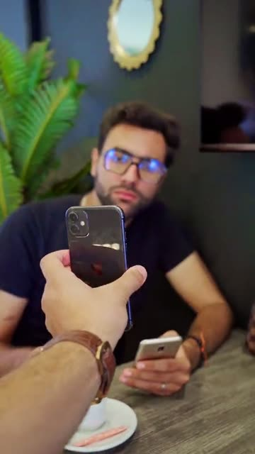
C:\Users\ayoub\OneDrive\Desktop\pointili\v2\public\clips\how-2-v2.mp4C:\Users\ayoub\OneDrive\Desktop\pointili\v2\public\clips\how-3-v2.mp4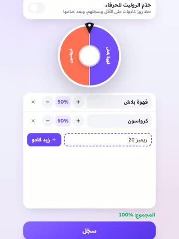
C:\Users\ayoub\OneDrive\Desktop\pointili\v2\public\clips\wheel-set-v2.mp4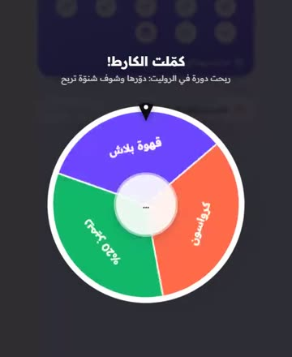
C:\Users\ayoub\OneDrive\Desktop\pointili\v2\public\clips\wheel-win-v2.mp4